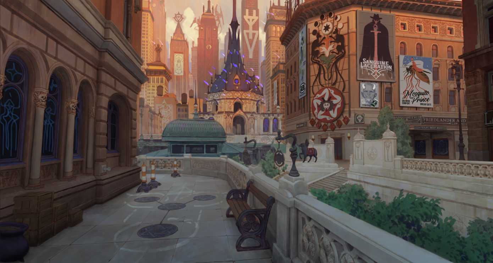
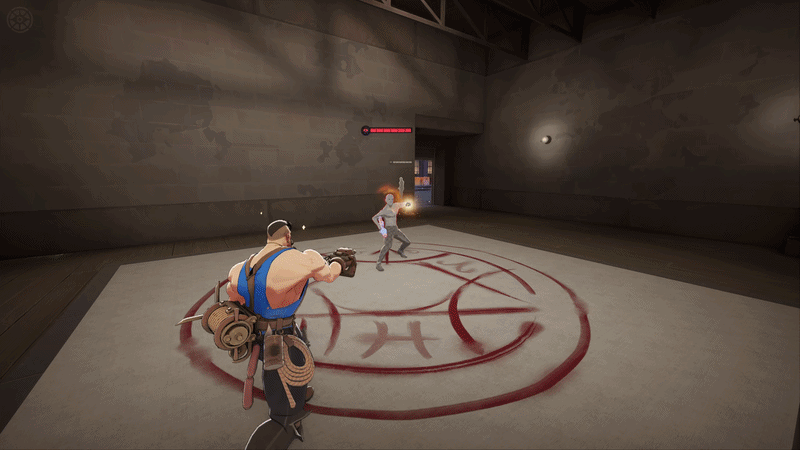
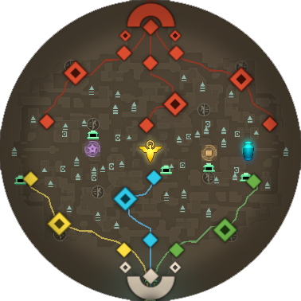
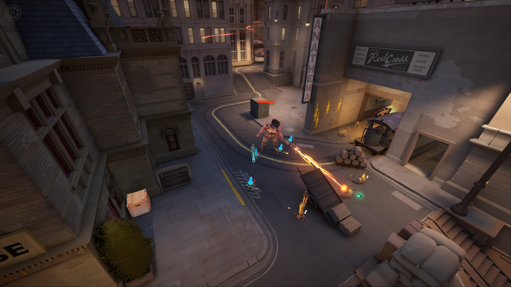
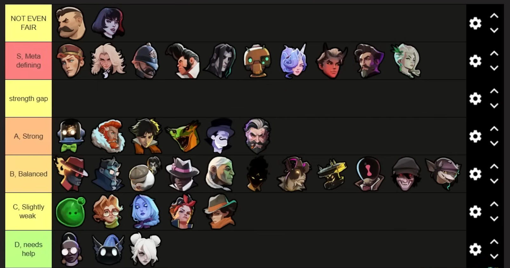
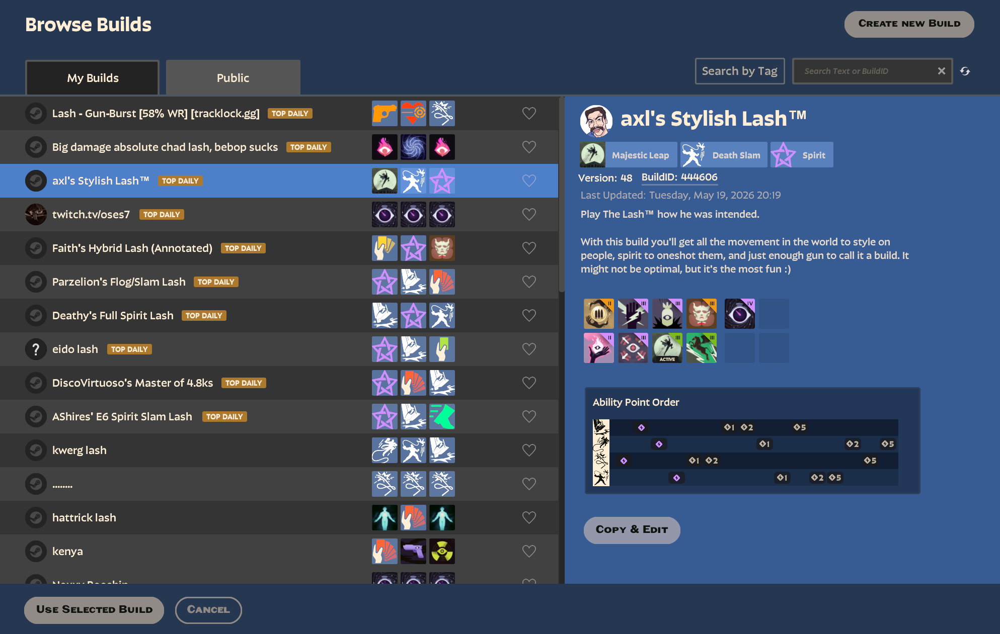
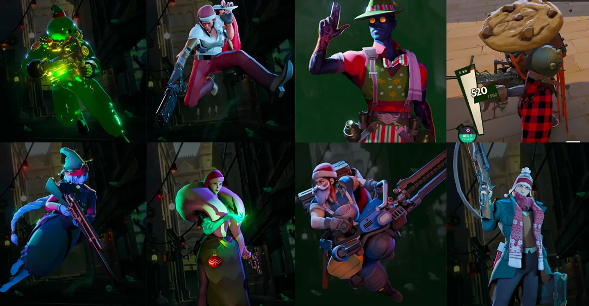

The Game That Officially Didn't Exist
Valve Corporation, the powerhouse behind the PC gaming storefront Steam, is no stranger to industry-defining titles. In 2007, they popularized the class-based shooter with Team Fortress 2, and in 2013, they cemented the MOBA (Multiplayer Online Battle Arena) genre with Dota 2. Now, Deadlock represents the historical culmination of Valve’s two most influential genres colliding.
But instead of a huge marketing campaign, Valve took the exact opposite approach. For months, Deadlock was an "open secret." Valve allowed thousands of people to playtest the game but strictly forbade them from talking about it publicly. To get in, you had to be personally invited by someone already playing. This created an exclusive, word-of-mouth hype train. Through artificial scarcity, Valve generated buzz and accumulated tens of thousands of daily players, before the game had even finished being developed or officially announced.

From Sci-Fi to The Occult
During its early development, the game was conceptualized as a sci-fi shooter titled Neon Prime. However, realizing that the futuristic aesthetic was becoming overly saturated in the gaming industry, Valve executed a massive pivot. They completely revamped the game's style into an alternate early 20th-century urban fantasy. Today, the game blends noir, gothic, and dieselpunk fiction into a unique setting known as "The Cursed Apple", an alternate version of New York City.
In this universe, the supernatural always existed but remained a myth until a late 19th-century eclipse triggered the "Maelstrom," opening Astral Gates across the Earth. Now, 50 years later, magic anomalies and occult rituals are a part of everyday life.
This lore directly dictates the gameplay loop. Two god-like entities, the Hidden King and the Archmother (known as Patrons), are attempting to enter the mortal plane. They promise to grant the ultimate wish of anyone who helps them. This summoning "ritual" is the 6v6 match itself, where characters with colliding fates battle through the streets to destroy the enemy's Patron.


Chess with Guns
To a non-gamer, Deadlock looks like pure chaos: characters flying on ziplines and casting spells across a 1950s noir-inspired city. However, through the mayhem there is a highly strategic chess-like game being played.
The map is strictly divided into three "lanes." Two teams of six players must slowly push down these lanes to destroy the enemy's base. Each player chooses one unique hero from a pool of 34, every hero has 4 abilities or spells and a gun specific to that character. The core technical design revolves around an in-game economy: defeating enemies grants you "Souls." You must actively choose how to spend these Souls to upgrade your character's weapon, magic, or health. It perfectly bridges the gap between the twitch-reflexes required of a traditional "shooter" and the long-term resource management of a strategy game.



A Community Writing the Rules
Because Deadlock is still in early development, there is no official guide on how to play perfectly. This has created a highly collaborative social environment where players gather on platforms like Discord to theory-craft, sharing specific item builds for characters and inventing new strategies to build the "meta" (Most Effective Tactic Available).
This collaboration extends directly into the game itself through the public Build Browser. Here, players can publish, rate, and share custom item loadouts for each character. While many loadouts are highly optimized, mathematically perfect meta builds, others are designed purely for silly, chaotic fun. This allows the community to constantly dictate and shift how the game is played.
However, this genre is also infamous for its intense social friction. MOBAs require heavy reliance on six complete strangers for up to 40 minutes, where one teammate's mistake gives the enemy a mathematical advantage. This creates a highly volatile psychological environment. Navigating this intense social dynamic by balancing collaborative teamwork against the genre's tendency toward toxicity is as much a part of the Deadlock experience as shooting the enemy.


How "Free" Generates Billions
Historically, the most successful games in the MOBA genre are entirely free to play. So, how does a free game generate billions in revenue?
The answer lies in digital cosmetics and the "Whale" economy. Players spend real money to buy different outfits, voice lines, and visual effects for their characters. While the vast majority of players spend nothing, a small percentage (referred to in the industry as "whales") spend thousands of dollars, effectively subsidizing the game for everyone else. Furthermore, because Valve owns the Steam platform, these cosmetics are digital investments traded on the Steam Community Market for real-world value. This creates a self-sustaining, highly lucrative micro-economy without ever forcing players to "pay to win."

The Cursed Apple Roster
With a constantly expanding roster of 34 unique heroes, the striking character design is one of Deadlock's greatest strengths. Hover over the portraits below to explore a curated selection of standout figures and learn about their unique playstyles within the occult city.
Abrams
A demonic private investigator. He thrives in close-quarters combat as a frontline brawler, using heavy melee attacks and a life-stealing book to outlast enemies.
Calico
A former monster hunter turned shadow-assassin. Alongside her spectral cat Ava, she ambushes foes with explosive Gloom Bombs and leaping slashes before vanishing back into the darkness.
Mina
An ambitious vampire socialite operating as a ranged glass cannon. She utilizes swift bat swarms to escape danger and silences groups of enemies to drain their life force from afar.
Silver
A werewolf bounty hunter seeking to cure her personal troubles. She locks down targets with an entangling bola and shotgun blasts before her terrifying Lycan curse takes over close-quarters combat.
Lash
A cocky, high-flying bruiser. He relies on his grappling hook and unparalleled vertical mobility to dive into the backline and stomp his enemies into the pavement.
Paige
A talented bibliomancer searching for her missing brother. She brings literature to life to control the battlefield, granting allies magical plot armor and summoning a phantom cavalry to trample her foes.
Rem
A sleepy stowaway from the world of dreams trying to find his way home. He supports his allies with his curious helpers and uses a devastating 'Naptime' ultimate to put enemies to sleep.
The Doorman
A cosmic entity masquerading as a polite hotel doorman. He provides his team with teleporting doorways and disrupts enemies by violently ramming them with high-speed luggage carts.